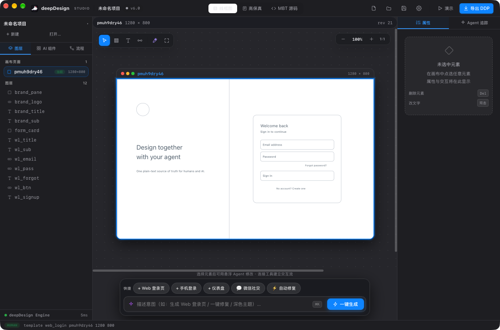
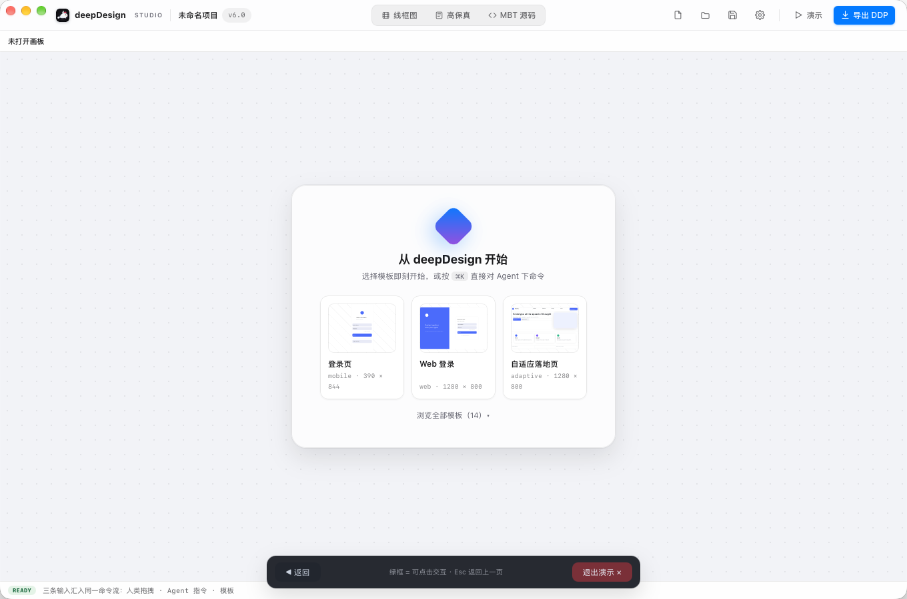
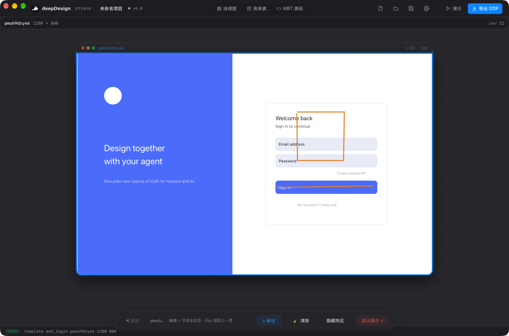

我读的不是像素，是结构。— AGENT · 同一时刻
人拖一下，Agent 改一处，写进的都是同一份 canonical .mbt.md。
往下滚，两边的经过同时讲。
.mbt.md · 唯一事实源
左边是产品经理当时的体验，右边是 Agent 的运行记录，同一段时间。


隐藏交互标注——真实成品观感，漏接的返回钮也强制可点
你说它画，中途想改随时上手。最后交到手里的是能点、能演示的原型。
最新版本：加载中…。全部分发包见 GitHub Releases。